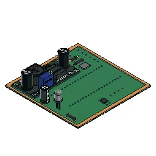
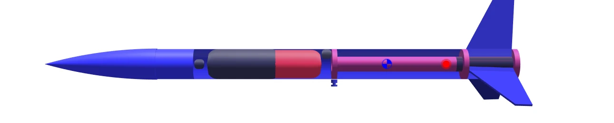
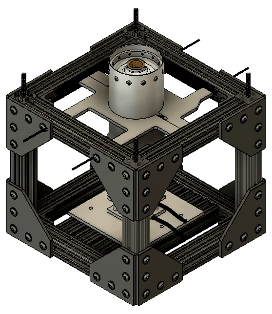

01 / CASE STUDYNASA USLI payload electronics
I worked on electronics packaging, custom PCBs, and sensor integration for Swamp Launch’s NASA USLI payload.
Explore the projectUNIVERSITY OF FLORIDA · ENGINEERING PORTFOLIO
I’m an engineering student from Trinidad and Tobago, pursuing separate B.S. degrees in Mechanical Engineering and Aerospace Engineering at the University of Florida.
I’ve been curious about mathematics, physics, and space travel since childhood. Today, I explore those interests through rocket payloads, design, machining, and research.

A LITTLE ABOUT ME
Aircraft, rockets, satellites, and cars all capture my interest. I’m drawn to a career in aviation or aerospace design, with the possibility of moving into engineering management as I grow.
At UF, I’m involved in rocketry, research, teaching, and community leadership. Beyond those roles, I enjoy reading, yoga, debating, and cooking—and spending time in the lab and machine shop.
Get to know me ↗SELECTED WORK / 01—03
Explore my role, design decisions, and results in each project.

01 / CASE STUDYI worked on electronics packaging, custom PCBs, and sensor integration for Swamp Launch’s NASA USLI payload.
Explore the project 02 / CASE STUDY
02 / CASE STUDYI designed a fruit-slicer attachment powered by an existing air engine, using a slotted-lever quick-return mechanism.
Explore the project
03 / CASE STUDYI designed Luna V1 in OpenRocket, refining its airframe, fins, and motor setup toward a stable certification flight.
Explore the projectCURRENT WORK · SWAMP LAUNCH
I’m developing the current sensor-suite mechanics and test-stand tooling. Explore the CAD and scope of each role.
Ongoing design · Sept. 2026–present
I lead mechanical design and integration of the current sensor suite, including sensor deployment hardware and battery/GPS mounts.
Explore IREC sensor suite & round payload ↗Ongoing design · Sept. 2026–present

I have worked on load-cell integration for our static-fire test stand and am now working on its modular, foldable blast shield.
Explore Static-fire test stand & blast shield ↗LET’S CONNECT
I’m seeking engineering internships and job opportunities where I can contribute and keep learning.
Get in touch ↗LinkedIn (opens in a new tab)